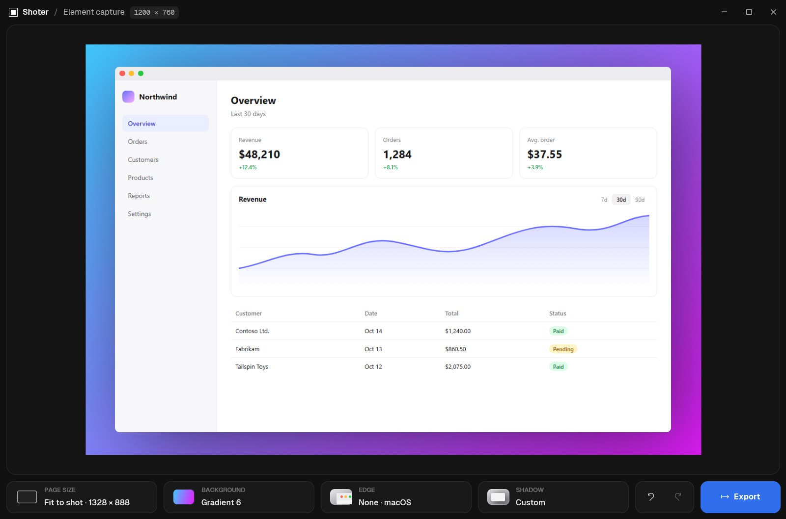
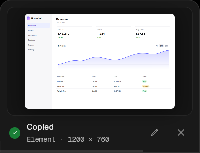
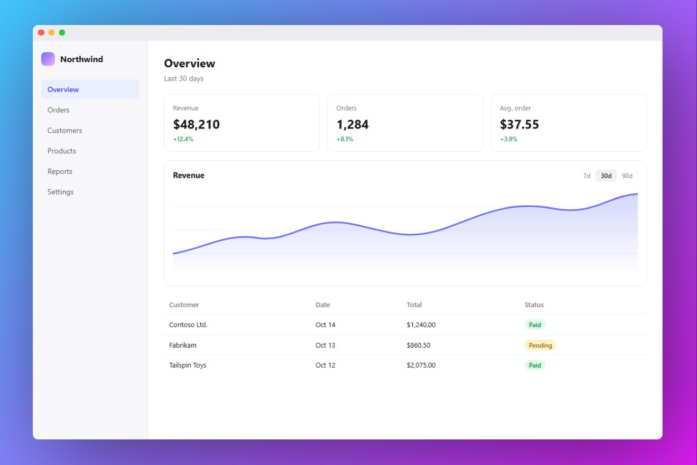
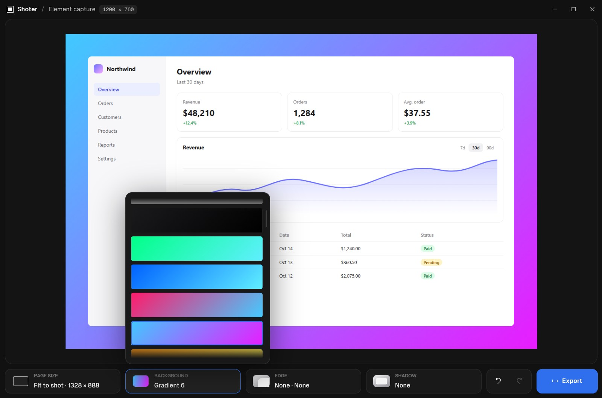
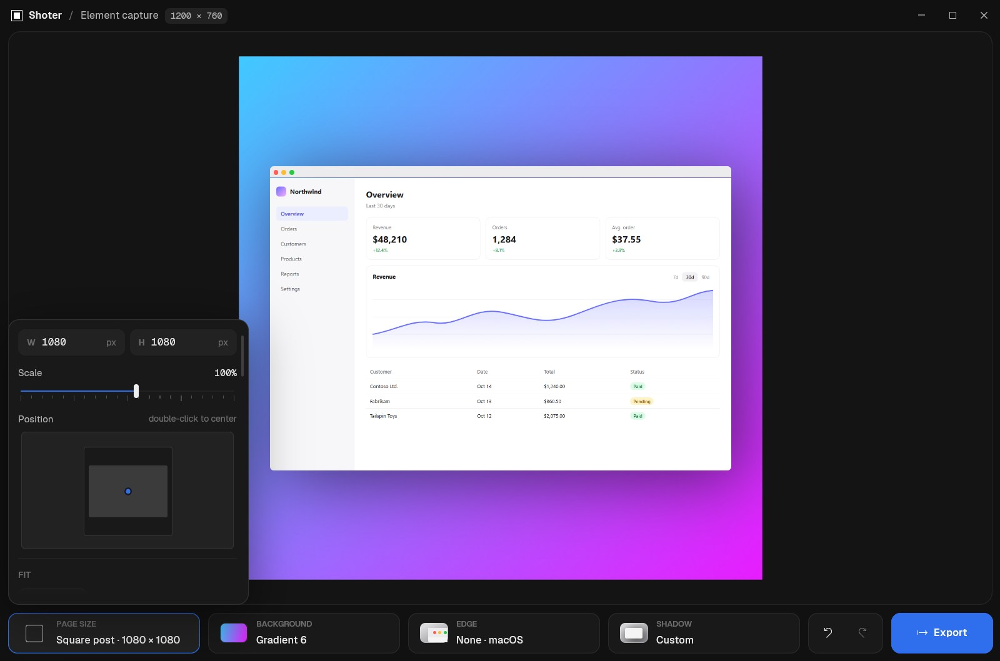
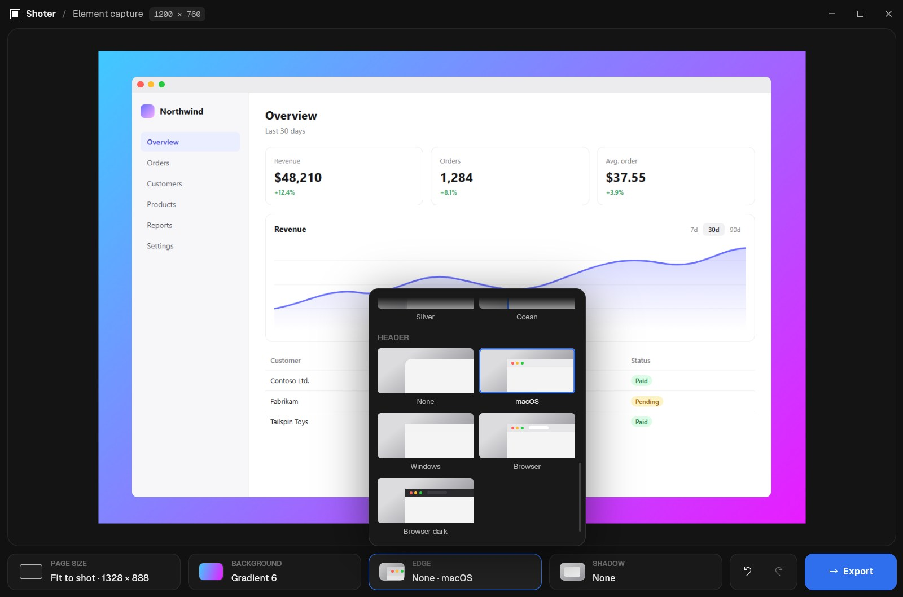
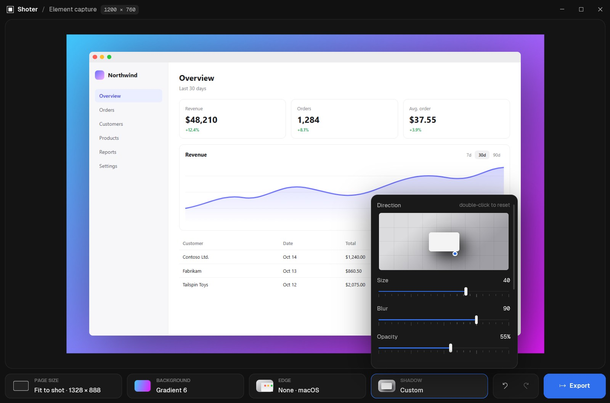

Screenshot exactly what you point at.
Press PrtSc, click any element. It's copied.
irm https://raw.githubusercontent.com/erfjab/Shoter/master/install.ps1 | iexPaste into PowerShell · Windows 10 and 11

Three moves.


A calm editor.

Background · 50 gradients, blur and grain.

Page size · Instagram, TikTok, X, YouTube and more.

Edge · macOS, Windows and browser headers.

Shadow · drag where it falls.
Free and open source~1 MB memory idle6 MB single fileOffline, no account
Like it? Give it a star.
A star helps others find Shoter. Follow the channel for updates.